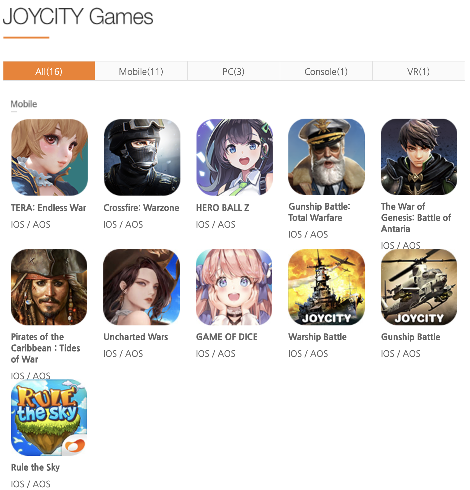

조이시티(구 JCE)는 1994년에 설립된 온라인 · 모바일 게임 개발사 및 배급사이다. 1998년 한국 최초의 SF MMORPG인 《워바이블》을 개발했다. 이후, 인기 만화를 원작으로 한 온라인 게임 《레드문》을 비롯해 국내 최초 리얼 라이프 시뮬레이션 게임인 《조이시티》등 다양한 장르의 게임을 개발 및 서비스했다. 2004년 국내 최초 길거리 농구 게임인 《프리스타일》이 흥행에 성공하며 온라인 스포츠 게임 전문 회사로 거듭났다. 중국, 대만, 일본, 미국 등 해외 시장에 진출해 좋은 성과를 거뒀고, 이를 바탕으로 글로벌 시장에 성공적으로 진입할 수 있는 교두보를 확보했다. 연이어 오랜 개발 과정을 거친 온라인 축구 게임 《프리스타일 풋볼》이 2010년 11월 11일에 정식 서비스를 시작했다. 이어 《프리스타일》의 후속작인 《프리스타일2》를 선보여 좋은 성과를 얻었다. 2014년 8월 28일에 《프리스타일 풋볼》의 서비스를 종료했으며, 동해 6월 3일에 액션성이 한층 강화된《프리스타일 풋볼Z》를 새롭게 런칭하며 명실상부 대한민국 최고의 스포츠 게임 개발 명가로 자리잡았다.
신규 플랫폼 발굴에 적극적으로 나선 2011년에는 모바일 소셜네트워크게임(SNG) 《룰 더 스카이》를 출시해 폭발적인 성장을 이뤄냈다. 현재(2016년 기준) 서비스 5주년을 맞이한 《룰 더 스카이》를 비롯해 비행슈팅 RPG 《정령의 날개》, 글로벌 6,500만 다운로드를 기록한 3D 헬리콥터 액션 게임 《건쉽배틀》, 후속작인 3D 전함 액션 게임 《워쉽배틀》, 전략 RPG 《라스트 드래곤》, 《스톰에이지》 등 다양한 장르의 모바일 게임을 서비스하고 있다. 2015년 10월 글로벌 출시된 모바일 보드게임 《주사위의 신》은 서비스 직후 홍콩 구글 플레이 스토어 및 애플 앱스토어에서 매출 1위를 기록하는 등 글로벌 시장에서 좋은 성과를 거두고 있다.
2014년부터 미래 성장 동력을 확보하기 위한 시도의 일환으로 VR 및 콘솔 사업에 대한 연구 개발을 시작했다. PS4 타이틀인 《3on3 프리스타일》과 6500만 다운로드를 기록한 《건쉽배틀》의 IP를 활용한 VR 게임 《건쉽배틀2 VR》을 2016년 중 출시할 예정이다. 중국산 게임같은 게임을 하도 만들어서 중국 회사라고 알고 있는 사람들이 많다.